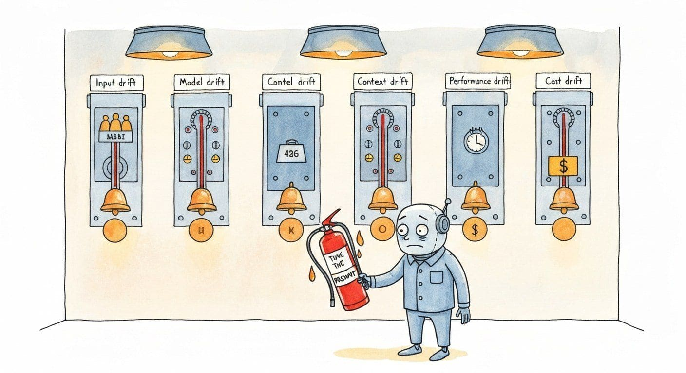

"Drift is not one thing. It is five things wearing the same name tag. The team that treats them all as 'tune the prompt' is the team that tunes for six months and ships nothing."
A Five-Flavor-Detecting AI Agent
"Drift" in classical ML usually means the input data distribution has shifted. In LLM production, drift has at least five distinct flavors, each with its own detection signal and its own response. Where Section 44.3 introduces the three coarse drift modes (prompt, response, quality) alongside the OTel-based observability stack, this section drills into a finer five-flavor taxonomy and the playbook for each. Treating drift as one phenomenon is the most common operational mistake in the first post-launch quarter; the team sees a quality score drop, panics, and tunes the prompt when the actual cause was a provider weight update or a stale retrieval index. This section unpacks the five flavors, the canonical detection signals for each, and the named 2024-2025 incidents that taught the field what to watch for.
Prerequisites
This section assumes familiarity with observability and drift detection from Section 44.3 and with post-launch monitoring from Section 44.4. Familiarity with LLM evaluation metrics from Section 42.1 helps when reasoning about which signals catch which drift flavor.
44.5.1 The Five Flavors of Drift

Each flavor has a distinct cause, a distinct detection signal, and a distinct response. The fastest operational improvement most teams can make in their first six months is to separate alerting and dashboards along these five dimensions. A single "quality dropped" alert is far less actionable than five flavor-tagged alerts.
| Flavor | Cause | Detection signal | First response |
|---|---|---|---|
| Input drift | User behavior shifts: new use cases, seasonal patterns, marketing bringing different audiences | Topic distribution shift in logged queries; rising "out of scope" rate; new keywords trending in transcripts | Expand eval set with recent samples; consider new prompt branches |
| Model drift | Provider updates weights or safety filters without versioned notice | Quality score drop on stable eval set; output format changes; new refusal patterns; subtle stylistic shifts | Pin model version if possible; re-tune prompts; escalate to provider |
| Context drift | Knowledge base or retrieval corpus becomes outdated | Rising "I don't know" or hallucination rate; user corrections increasing; freshness complaints | Schedule regular index refreshes; add freshness metadata to chunks |
| Performance drift | Latency increases due to provider load, network changes, or growing context sizes | p95 latency crossing threshold; timeout rate increasing; queue depth alarms | Review context sizes; consider caching; evaluate alternative providers |
| Cost drift | Average tokens per request growing; cache hit rates declining; user volume spiking | Cost-per-request trending upward; monthly bill exceeding projections | Audit prompt sizes; enforce output limits; review model routing thresholds |
Three observations from production teams in 2025-2026: model drift is by far the most underestimated flavor (because it is invisible to your eval set if the eval set is too small); cost drift is by far the most expensive flavor when ignored (a 20 percent token bloat compounds quietly into a 60 percent bill increase across a quarter); and input drift is by far the most useful flavor to monitor proactively, because it foreshadows everything else.
44.5.2 The Silent Provider Update
The single best-documented operational nightmare in 2024-2025 was the silent provider update. The pattern: a provider quietly retunes a model alias (e.g., "gpt-4-turbo" or "claude-3-sonnet") without a version bump or a release note. Your production traffic continues to call the alias. The new weights produce subtly different outputs, your static eval set does not notice because it does not sample from production traffic, and your thumbs-down rate creeps up over weeks until a customer complains loudly enough to trigger an investigation.
The pattern has occurred at every major provider at least once. OpenAI's June 2023 and March 2024 updates were both detected by external researchers before being officially acknowledged. Anthropic and Google have each had documented incidents in 2024-2025 where a model alias's behavior changed without a corresponding version bump. The lesson the field absorbed: pin model versions in production, and treat your eval suite as a thing that has to refresh with production samples or it becomes worthless within months.
An anonymized 2024 incident reported at a major SaaS company: their AI legal-research assistant had launched with a 4 percent thumbs-down rate. Eight months in, the rate had crept to 11 percent. The static eval suite still scored 91 percent on the original 200-case set. Engineering was confused for two weeks until a paralegal contractor manually reviewed 50 recent flagged interactions. The pattern was clear: the model had started producing longer answers, citing more sources, and occasionally hallucinating case names. Cross-referencing the provider's release notes turned up nothing official, but third-party benchmarks confirmed the model behind the alias had shifted. The team pinned to a specific dated model snapshot, re-tuned the prompts for the older behavior, and rebuilt their alerting to compare the live model against the pinned baseline weekly. Thumbs-down dropped back to 5 percent within a week. The fix took six engineer-days; the unmonitored months had cost the team roughly $400k in customer-success time alongside the actual quality regression.
44.5.3 Detecting Drift Before Users Do
The win is to detect drift internally before customers complain. Three monitoring practices, layered, catch most drift in its first 24-72 hours:
- Rolling eval samples. Every day, sample 50-200 production interactions, run them through an LLM-as-judge eval, and aggregate to a daily score. The daily score is your fastest leading indicator. LangSmith, Braintrust, and Humanloop all automate this in their 2025-2026 products.
- Output-distribution monitoring. Track summary statistics of the model's outputs over time: average response length, refusal rate, format-conformance rate, top-N most common phrases. Any of these shifting by more than two standard deviations is a model-drift signal even before quality scores move.
- Pinned-versus-current shadow comparison. Run a small percentage of traffic (5-10%) through both your pinned model version and a non-pinned current version. The diff between the two outputs, scored daily, is the cleanest single signal that a provider update has shifted behavior. The cost is small (5-10% extra calls); the value of catching a silent update on day one is enormous.
Drift does not only happen to your model and your inputs; it happens to your measuring stick. As the production distribution shifts, a golden set frozen at launch slowly stops covering the cases that now matter, so its accuracy number drifts away from real-world performance even when the model is unchanged. Treat eval-set refresh as part of drift detection: when your monitors flag a distribution shift, sample 50 to 100 of the newly-common interactions, label them, and fold them into the golden set so the benchmark tracks the drift it is meant to catch. The labeling step requires human judgment, and that human time is the single most expensive line item in mature LLM operations, so budget it explicitly.
44.5.4 The Cost-Drift Anti-Pattern
Cost drift deserves its own treatment because it is the easiest to ignore and the most expensive to recover from. The pattern: a feature ships, system prompts grow incrementally (each addition justified individually), few-shot examples accumulate, agent loops gain steps, retrieval contexts expand. None of the additions look problematic in isolation. The cumulative effect, six months in, is that the average tokens per request has doubled. The monthly bill has tripled (the second factor compounds with input growth). The product is now unprofitable on the original willingness-to-pay assumption.
The detection signal is straightforward: track input tokens per request and output tokens per request as time series, with alerts when either trends more than 20 percent above their 90-day baseline. The fix is also straightforward but requires discipline: a quarterly "prompt audit" where every prompt and few-shot block is reviewed for bloat, and tokens are removed where they no longer carry their weight. Teams that do not do this audit quarterly almost always discover, at the one-year mark, that they could have removed 30-40 percent of their token spend with no quality impact.
Agentic systems are especially vulnerable to cost drift because each loop iteration multiplies the token cost. A single new tool added to an agent (say, a "search the docs" tool) can easily push average loops from 5 to 8, which is a 60 percent cost increase for that workflow. Monitor agentic-workflow cost on a per-task basis, not per-call. The aggregate per-call cost will hide the workflow-level explosion. Applied LLMs has multiple case studies of teams discovering 3-5x cost overruns in agent workflows that had passed every per-call audit.
44.5.5 The Drift Response Playbook
Once detected, each drift flavor has a different response. Treating "drift" as a single phenomenon and reaching for prompt-tuning every time is the most common process anti-pattern in post-launch operations.
- Input drift: first action is expanding the eval set with recent samples. Do not change the system unless eval scores actually drop; the system may already be handling the new inputs well.
- Model drift: first action is pinning to a known-good model version. Re-tune prompts against the pinned version. Open a ticket with the provider documenting the observed behavioral change.
- Context drift: first action is refreshing the retrieval index. Schedule recurring refreshes if you have not already. Add freshness metadata so the model can disclose when context is dated.
- Performance drift: first action is reducing context size. Caching, smaller models, or alternative providers come after.
- Cost drift: first action is a prompt audit. Token-by-token review. Quarter-rule: if you have not done it in a quarter, do it now.
WhyLabs LangKit shipped a small, mostly-undocumented feature in 2024 to detect what their data-science team called whole-numbered drift: when the share of model outputs that contain a numeric value ending in 00 or 000 spikes overnight. It correlates eerily well with vendor-side reasoning upgrades, because newer reasoning models tend to round more aggressively (the user asked for a price estimate; the new model says "around $1500" instead of "$1487.32"). A 2024 OpenLLMetry community blog credited the heuristic with flagging an unannounced Gemini snapshot rotation more than a day before any official changelog appeared.
- LLM drift has five distinct flavors: input, model, context, performance, cost.
- Silent provider updates are the most underestimated flavor; pin model versions in production.
- Rolling eval samples + output-distribution monitoring + pinned-vs-current shadow comparison catch most drift in 24-72 hours.
- Cost drift hides inside agentic workflows; monitor per-task, not per-call.
- Each flavor has a distinct first response; reaching for prompt-tuning every time is a process anti-pattern.
Construct two 1000-prompt corpora: corpus A is the baseline distribution and corpus B replaces 20% of prompts with longer ones (1.5x token length). Run a Kolmogorov-Smirnov test on token-length distributions and an MMD test on prompt embeddings. Report the p-values and which test flags the drift more confidently.
Answer Sketch
KS on token length should reach p < 0.001 because the length distribution is exactly what is shifting. MMD on embeddings is also sensitive but more indirect; expect p < 0.05 but typically a larger value than KS. The takeaway: pick the test that matches the suspected drift dimension. A length-blind embedding distance (cosine) may even miss this drift if longer prompts happen to be on similar topics.
An agentic workflow makes an average of 4.2 LLM calls per user task last week and 5.7 calls per task this week, while per-call cost is unchanged. Per-call latency is also flat. Identify three plausible root causes and the one metric that distinguishes them.
Answer Sketch
Causes: (1) tool-call success rate dropped, so the agent retries; (2) a recent prompt change increased the rate of self-correction loops; (3) the upstream LLM changed and is more likely to call a clarifying tool. Distinguishing metric: tool-call success rate by tool name. (1) shows up as a tool-specific drop; (2) shows as a rise in same-prompt repetition; (3) shows as a change in the distribution of which tool fires first. Without per-task call counts, the cost spike looks like a usage increase.
Detecting drift is half of the story; the other half is having a deliberate plan for moving between model versions and providers when drift fires. Continue to Section 44.6: Model-Rotation Strategy to see how teams sequence model changes without surprising their users.